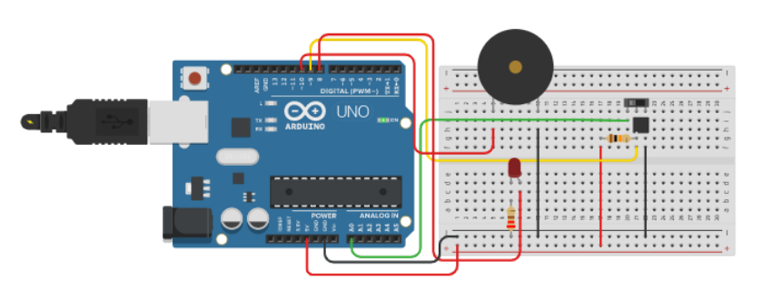

int ledPin = 8;
int sensorPin = 9;
int slide = A0;
int piezo = 10;
void setup(){
pinMode(ledPin, OUTPUT);
pinMode(sensorPin, INPUT);
Serial.begin(9600);
}
void loop(){
int val = digitalRead(sensorPin);
int switched = analogRead(slide);
if(switched == 0){
digitalWrite(ledPin, HIGH);
} else {
digitalWrite(ledPin, LOW);
}
if (val == HIGH) {
tone(piezo, 650);
Serial.println(val);
} else {
noTone(piezo);
}
}
Результат: Датчик можно включить и выключить. Если он выключен, загорится светодиод. Если он включен и под наклоном, просигнализирует пьезо элемент. Ссылка на проект
 Обратно